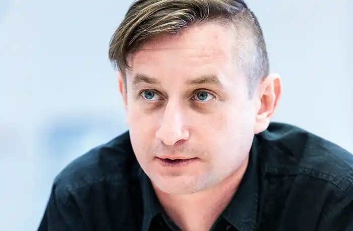
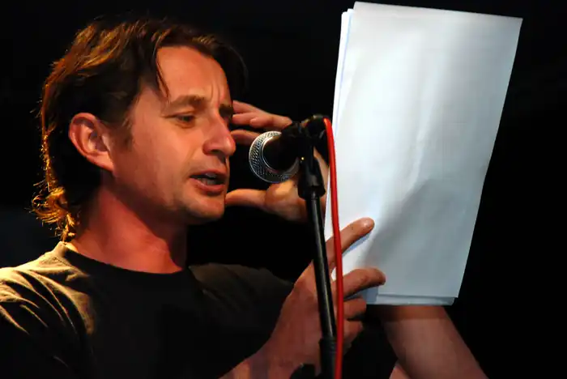
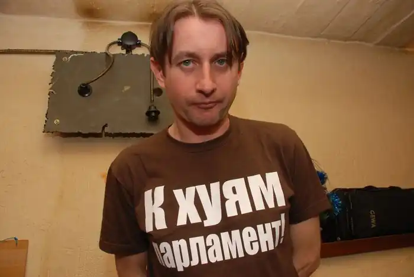

Сергій Жадан — український поет, прозаїк, есеїст, перекладач. Народився 23 серпня 1974 р. в місті Старобільськ Луганської області. У 1996 році закінчив Харківський національний педагогічний університет імені Сковороди. У 1996-1999 роках навчався в аспірантурі університету; кандидат філологічних наук. З 2000 року — викладач кафедри української та світової літератури ХНПУ. У 2004 році закінчив викладацьку діяльність.
Перекладає поезію з німецької (в тому числі Пауля Целана), англійської (в тому числі Чарльза Буковскі), білоруської (в тому числі Андрія Хадановича), російської (в тому числі Кирила Медведєва, Данилу Давидова) мов. Власні тексти перекладалися німецькою, англійською, польською, сербською, хорватською, литовською, білоруською, російською та вірменською мовами.
У березні 2008 року роман Жадана "Anarchy in the UKR" в російському перекладі увійшов в "довгий список" російської літературної премії "Національний бестселер" (номінатора виступив російський письменник Дмитро Горчев). Ця ж книга в 2008 році увійшла в шорт-лист і отримала почесну грамоту конкурсу "Книга року" на Московській міжнародній книжковій виставці-ярмарку. У травні 2010 року журнал "GQ" вдруге висунув Жадана на звання "Людина року" в номінації "Письменники" за книгу "Червоний Елвіс" (перше висунення відбулося у 2008 році за "Anarchy in the UKR"). Критики називають Сергія Жадана одним з найкращих літераторів з країн колишнього СРСР, відзначають його вміння бути своїм як для простої, так і для освіченої аудиторії. Особливу похвалу і підтримку отримав його роман "Ворошиловград", який було названо маніфестом цілого покоління. У 2016 році Сергій Жадан був нагороджений престижною літературною премією Президента України "Українська книжка року" за збірку "Месопотамія". Письменник щиро подякував главі держави за надану честь і повідомив, що грошову винагороду передасть на потреби дітям: "… Ми з видавцями хочемо ще раз подякувати Вам за цю премію і передати її на потреби дитячих закладів Луганської області. Ми з друзями-волонтерами вже певний час допомагаємо дитячим садочкам та інтернатам на Луганщині, тож радо передамо і ці кошти дітям". Письменник живе і працює в Харкові. Регулярно виступає зі своїми творами в різних містах України та Західної Європи — зокрема в супроводі українських музикантів (найчастыше, групи "Собаки в космосі").